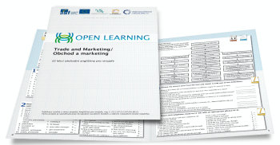
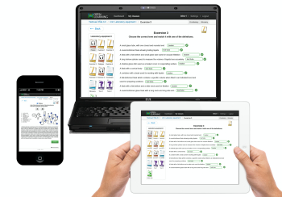

OPEN LEARNING
kvalita - jednoduchost - otevřenost
Definice
V nejširším významu je OPEN LEARNING praktický vzdělávací koncept, certifikační program v oblasti přípravy lektorů a učitelů odborných cizích jazyků a ověřování výsledků jazykového vzdělávání.
OPEN LEARNING je prostředí a metodický nástroj pro vytváření a zpřístupnění digitálního vzdělávacího obsahu online i offline. Webová aplikace je navržena moderní technologií pro školy a vzdělávací centra od 1 do 100 zařízení zapojených v síti. Aplikace je velmi intuitivní a klade minimální nároky na školení uživatelů.
Výukový soubor OPEN LEARNING je vždy vytvářen ve spolupráci s odborníky z praxe, poskytuje procvičování odborné terminologie, testování, poslechy audio nahrávek a videonahrávek z prostředí podniků, odkazy na další zdroje informací atd.
Výukový soubor tvoří učebnice, online pracovní sešit a příručka pro lektory.
Přednosti

PŘEHLEDNOST
- systematicky strukturované lekce v učebnici a online pracovním sešitu
- třicet odborných termínů v každé lekci
- texty vytvořené ve spolupráci s odborníky a rodilými mluvčími z oboru
- výukové materiály prověřené odborníky z podniků a vysokých škol
PROVÁZANOST S PRAXÍ
- videonahrávky vytvořené v prostředí podniků v každé lekci
- ústní a písemné úkoly vycházející z reálných potřeb praxe
- okamžité vyhodnocení cvičení a testů v online pracovním sešitě
- přehlednost a dostupnost výsledků pro studenta i jeho lektora

Výuka
OPEN LEARNING je výhradně vyučován certifikovanými lektory a certifikovanými učiteli. Doporučená doba ke zvládnutí deseti lekcí je 10-12 týdnů, což představuje 40 hodin výuky nebo online učení.
Kontaktní výuka probíhá s certifikovaným učitelem nebo certifikovaným lektorem zpravidla 4 hodiny týdně. Je doplněna samostudiem s využitím online pracovního sešitu a individuálních konzultací. Online učení probíhá v době a místě, které vyhovuje studentovi.
OPEN LEARNING umožňuje efektivnější učení a kontrolu průběhu učení. Průběžné hodnocení výsledků učení zobrazené v online pracovním sešitu okamžitě motivuje studenty k zodpovědnosti za výsledky učení.
OPEN LEARNING umožňuje integrovat výuku předmětu a cizího jazyka a vytvářet podmínky pro osvojení odborné terminologie předmětu v cizím i českém jazyce v souladu s Výnosem č. 9/2013 MŠMT pro vydávání rozhodnutí o povolení výuky některých předmětů v cizím jazyce pro základní a střední školy, který nabyl účinnosti dnem 1. ledna 2014, Č.j. :MSMT-46350/2013. (CLIL - Content and Language Integrated Learning).
Open Agency